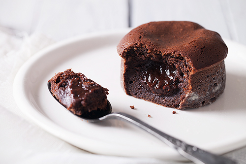

<ion-view view-title="Fondant au chocolat">

    <ion-content class="padding">


        <h1>Fondant au chocolat</h1>

        

        <p class="gras">Temps de préparation : 15 minutes</p>

        <p class="gras">Temps de cuisson : 20 minutes</p>

        Ingrédients / pour 6 personnes
    <ul>
        <li>200 g de chocolat</li>
        <li>150 g de beurre</li>
        <li>150 g de sucre en poudre</li>
        <li>50 g de farine</li>
        <li> 3 oeufs</li>
    </ul><br>

        <p class="gras">Préparation de la recette :</p>
        <p>Passer le beurre au micro-ondes une dizaine de secondes.</p>
        <p>Faire fondre le chocolat au bain-marie en morceaux.</p>
        <p>Dans un saladier travailler le beurre mou, ajouter le sucre en poudre et melanger. Puis ajouter les oeufs un à un en alternance avec la farine.</p>
        <p>Incorporer le chocolat fondu, remuer et verser la préparation dans des ramequins beurrés.</p>
        <p>Mettre les ramequins dans le congélateur pendant une heure.</p>
        <p>Préchauffer le four à 150°C et mettre les ramequins à cuire 20 minutes pas plus.</p>


    </ion-content>

</ion-view>